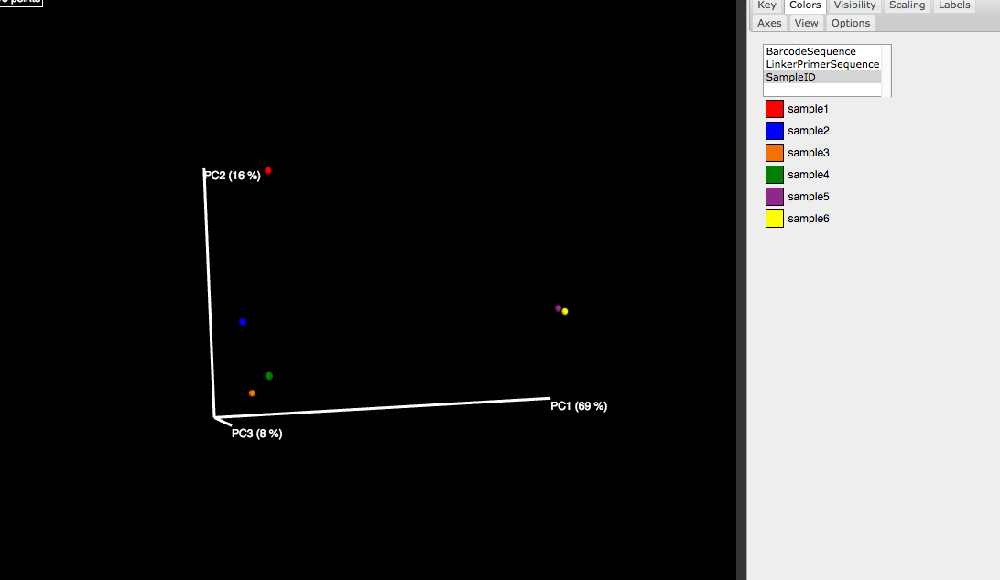

Recipe 008: Do diversity analysis using IGS
This recipe shows the procedure to do diversity analysis using the concept of IGS, for whole shotgun metagenomic sequencing data.
Basically instead of using OTUs, IGSs(informative genomic segment) are used as the cornerstone to evaluate diversity. The recipe mainly shows the pipeline to generate the IGSs-by-samples matrix from raw sequencing reads. After we get the IGSs- by-samples matrix, we use QIIME to do the alpha/beta diversity analysis.
For this recipe, firstly we create 6 synthetic samples (Sample 1-6) based on 9 synthetic 10K genomes (genome A-I), with different composition of species and diversity.
The sequencing depth of all the synthetic data sets is 10X. For simplicity, there is no sequencing errors introduced in the synthetic reads data sets.
The final species abundance for each synthetic sample is as below:
sample1: genomeA -> 30, genomeB -> 10 sample2: genomeA -> 20, genomeB -> 10, genomeC -> 10 sample3: genomeA -> 10, genomeB -> 10, genomeC -> 10, genomeD -> 10 sample4: genomeA -> 10, genomeB -> 10, genomeC -> 10, genomeE -> 10 sample5: genomeA -> 10, genomeF -> 10, genomeG -> 10, genomeH -> 10 sample6: genomeI -> 10, genomeF -> 10, genomeG -> 10, genomeH -> 10
The synthetic sequencing data sets for the 6 samples are sample_1.fa, sample_2 .fa, sample_3.fa, etc.
The first thing we need do is to generate the hash table files for each reads fasta file:
for i in sample_*.fa; do load-into-counting.py -x 1e6 -k 20 $i.kh $i ; done
Next we use a script get_comb_multi.py to generate the coverage of each read across samples. For each sample reads fasta file, there is an output file containing the coverage information.
But before we run the script, we need to generate a config.txt file, which contains three lines, the first line with a list of hashtable files, the second line with a list of fasta files, and the third line with the size of memory available to use.
ls sample_*.kh | awk '{ ORS=" "; print; }'>config.txt
printf "\n" >>config.txt
ls sample_*.fa | awk '{ ORS=" "; print; }' >>config.txt
printf "\n" >>config.txt
printf "30000000" >>config.txt
Let's run the script:
./python get_comb_multi.py config.txt
Let's check an output file:
$ more sample_1.fa.comb read0f_genomeA.fa 24 18 10 10 10 0 read1r_genomeA.fa 20 15 7 7 7 0 read2r_genomeA.fa 19 12 7 7 7 0 read3f_genomeA.fa 21 14 8 8 8 0 read4r_genomeA.fa 19 14 6 6 6 0 read5r_genomeA.fa 26 23 11 11 11 0 read6r_genomeA.fa 19 15 8 8 8 0
Here we can see for each read in this sample (sample_1), the coverage numbers of this read across the 6 samples are listed in different columns. The order of the samples is in accordance with the order of the files listed in the first line of "config.txt" file.
Next we run count_spectrum_freq_multiple_files.py to get the count of reads with each coverage spectrum across different samples. A "coverage spectrum" is the coverage of a read across different samples. A read with a coverage spectrum as "1-0-0-0-2-1" has a coverage as "1" in sample1, is not covered in sample2,3,4, has a coverage as "2" in sample5, has a coverage as "1" in sample 6 at last.
To run count_spectrum_freq_multiple_files.py, a file with a list of the ".comb" files should be generated beforehand:
ls *.comb >comb.list python count_spectrum_freq_multiple_files.py comb.list all_sample.spectrum
An except from output file:
0-0-0-0-10-10 0 0 0 0 372 372 0-0-0-0-11-11 0 0 0 0 249 249 0-0-0-0-12-12 0 0 0 0 252 252 0-0-0-0-13-13 0 0 0 0 216 216 0-0-0-0-14-14 0 0 0 0 66 66 0-0-0-0-15-15 0 0 0 0 9 9 0-0-0-0-16-16 0 0 0 0 36 36
Beta-diversity analysis
This shows there are 372 reads in sample 5 and 372 reads in sample 5 with the coverage spectrum of "0-0-0-0-10-10". In other way, 372 reads in sample 5 and sample 6 respectfully have a coverage as 10 in both samples. Here because there is no sequencing error in data sets, so the number of reads in both with same coverage spectrum is the same. (the ratio of 10:10) If there is error, it may be different, but the ratio should be similar to the ratio of the coverage in the spectrum. Divided 372 by 10, we can say 37 (we round 37.2 to 37) IGSs are shared by sample 5 and sample 6. Actually, the calculation should be (372+372)/(10+10). But in this case, no big difference. All the IGSs have a coverage as 10 in both samples.
Next we can list all the IGSs and corresponding coverage(abundance) across samples to get the IGSs-by-samples matrix.
Here we need a MAP file to store the meta data of the data set, which is also required by QIIME. Since this is synthetic data set, the MAP file is pretty simple:
$ more all_sample_MAP.txt #SampleID BarcodeSequence LinkerPrimerSequence Description sample1 A A AAAB sample2 A A AABC sample3 A A ABCD sample4 A A ABCE sample5 A A AFGH sample6 A A IFGH
python seperate_IGS.py all_sample.spectrum all_sample_MAP.txt
An except from output file:
202 0 0 0 0 13 13 203 0 0 0 0 13 13 204 0 0 0 0 13 13 205 0 0 0 0 13 13 206 0 0 0 0 13 13 207 0 0 0 0 13 13 208 0 0 0 0 13 13 209 0 0 0 0 14 14 210 0 0 0 0 14 14 211 0 0 0 0 14 14 212 0 0 0 0 14 14 213 0 0 0 0 16 16 214 0 0 0 0 16 16 215 0 0 0 0 3 3 216 0 0 0 0 3 3 217 0 0 0 0 3 3 218 0 0 0 0 3 3 219 0 0 0 0 4 4
This output file lists all the IGSs and the corresponding abundance across the 6 samples in each line.
Next we can use QIIME to do the beta analysis. Before that, we need to convert the IGSs-by-samples matrix into the BIOM format:
biom convert -i all_sample.spectrum.IGS -o all_sample.spectrum.IGS.biom --table-type="OTU table"
Also, we get some statistics from the BIOM file:
biom summarize-table -i all_sample.spectrum.IGS.biom -o all_sample.spectrum.IGS.biom.summary.txt
Output summary file contains the number of counts in different sample. We will need the information for the analysis below:
Counts/sample detail: sample1: 1057.0 sample2: 1956.0 sample3: 2858.0 sample4: 2858.0 sample5: 2988.0 sample6: 3886.0
With the BIOM file and MAP file, we can use QIIME pipeline to do beta diversity analysis. See http://qiime.org/tutorials/tutorial.html for details.
- Here we use beta diversity metrics as "bray curtis", which is set in preference
- file p_file.txt.
Compute Beta Diversity and Generate Beta Diversity Plots
beta_diversity_through_plots.py -i all_sample.spectrum.IGS.biom -o bdiv_even1000/ -m all_sample_MAP.txt -e 1000 -p p_file.txt
We can open the index.html file in folder bdiv_even1000/bray_curtis_emperor_pcoa_plot/ to see the interactive PCA figure, like shown below.
We can also call a seperate script to draw 2D plots:
make_2d_plots.py -i bdiv_even1000/bray_curtis_pc.txt -m all_sample_MAP.txt -o beta_2d_plots/

Jackknifed Beta Diversity and Hierarchical Clustering
jackknifed_beta_diversity.py -i all_sample.spectrum.IGS.biom -o bdiv_jk1000 -e 1000 -m all_sample_MAP.txt -p p_file.txt make_bootstrapped_tree.py -m bdiv_jk1000/bray_curtis/upgma_cmp/master_tree.tre -s bdiv_jk1000/bray_curtis/upgma_cmp/jackknife_support.txt -o bdiv_jk1000/bray_curtis/upgma_cmp/jackknife_named_nodes.pdf

Alpha-diversity analysis
For alpha-diversity, the procedure is similar to beta-diversity shown above. The difference is that for higher accuracy, we treat each sample seperately and get the abundance distribution of IGSs in each sample.
To do this, instead of using script seperate_IGS.py, we use script seperate_IGS_for_alpha.py to list the IGSs out:
python seperate_IGS_for_alpha.py all_sample.spectrum all_sample_MAP.txt
Next, the same as beta-diversity procedure:
biom convert -i all_sample.spectrum.IGS.alpha -o all_sample.spectrum.IGS.alpha.biom --table-type="OTU table" biom summarize-table -i all_sample.spectrum.IGS.alpha.biom -o all_sample.spectrum.IGS.alpha.biom.summary.txt
We'd like to calculate chao1 estimator, so we create a parameter file firstly:
echo "alpha_diversity:metrics chao1,observed_species" > alpha_params.txt
Then run alpha diversity pipeline:
alpha_rarefaction.py -i all_sample.spectrum.IGS.alpha.biom -m all_sample_MAP.txt -o wf_arare/ -p alpha_params.txt -f
Observed IGSs:

Chao1 estimator:

Resources and Links
This recipe is hosted in the khmer-recipes repository, https://github.com/ged-lab/khmer-recipes/.
It requires the khmer software.